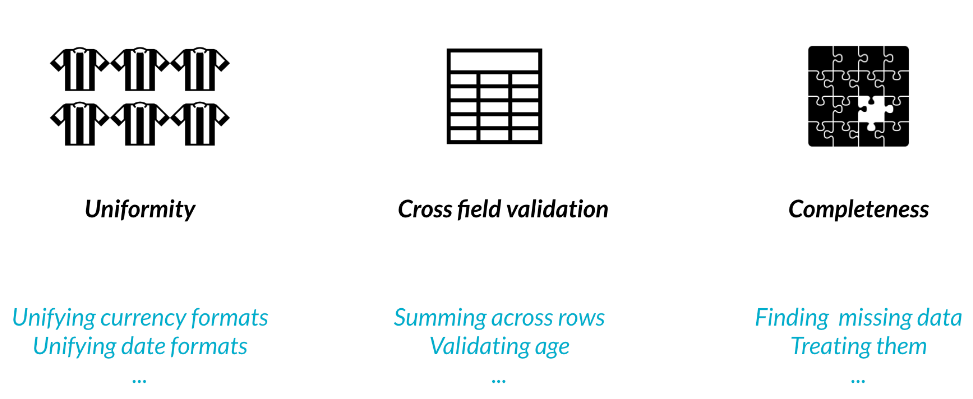
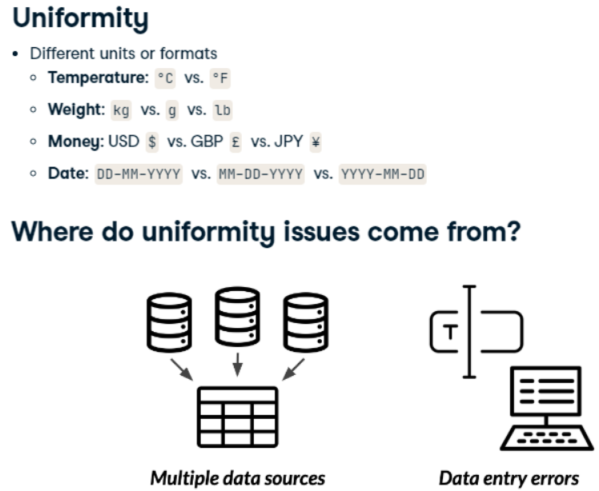
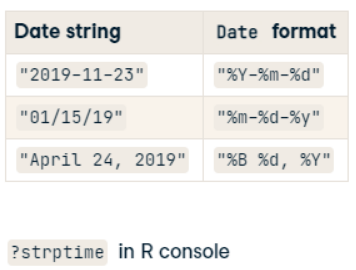
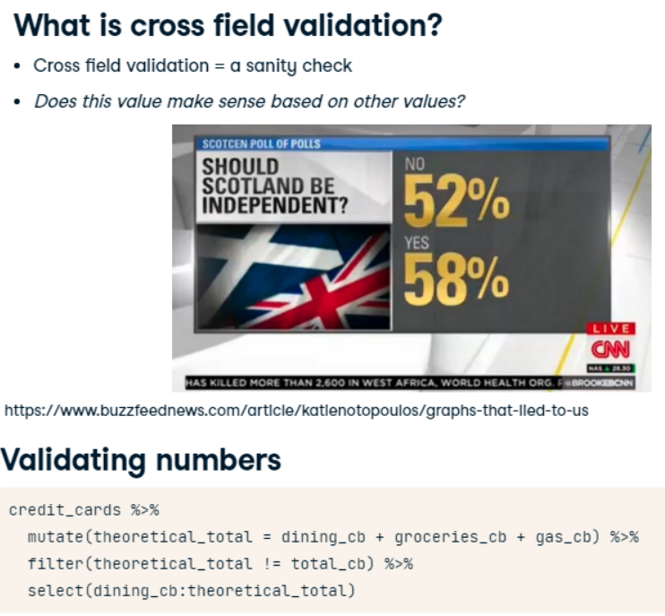
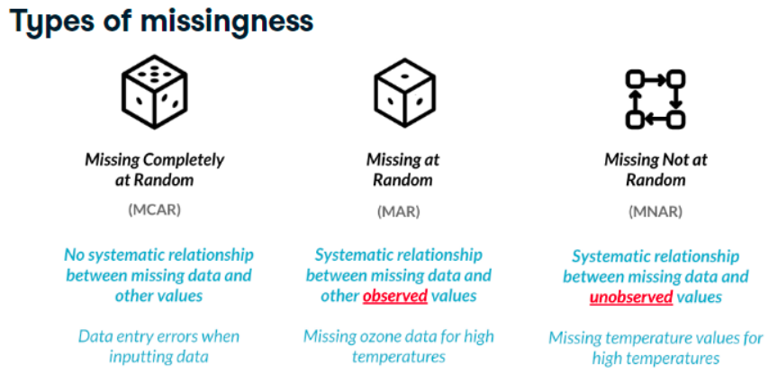
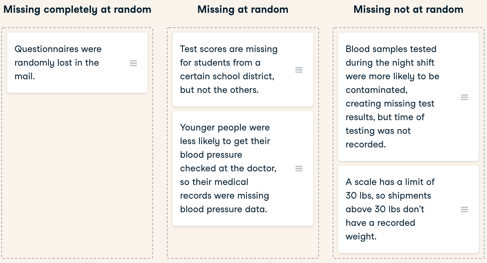

Last updated: 2022-11-23
Checks: 7 0
Knit directory: Misean/
This reproducible R Markdown analysis was created with workflowr (version 1.7.0). The Checks tab describes the reproducibility checks that were applied when the results were created. The Past versions tab lists the development history.
Great! Since the R Markdown file has been committed to the Git repository, you know the exact version of the code that produced these results.
Great job! The global environment was empty. Objects defined in the global environment can affect the analysis in your R Markdown file in unknown ways. For reproduciblity it’s best to always run the code in an empty environment.
The command set.seed(20221115) was run prior to running
the code in the R Markdown file. Setting a seed ensures that any results
that rely on randomness, e.g. subsampling or permutations, are
reproducible.
Great job! Recording the operating system, R version, and package versions is critical for reproducibility.
Nice! There were no cached chunks for this analysis, so you can be confident that you successfully produced the results during this run.
Great job! Using relative paths to the files within your workflowr project makes it easier to run your code on other machines.
Great! You are using Git for version control. Tracking code development and connecting the code version to the results is critical for reproducibility.
The results in this page were generated with repository version b5753a4. See the Past versions tab to see a history of the changes made to the R Markdown and HTML files.
Note that you need to be careful to ensure that all relevant files for
the analysis have been committed to Git prior to generating the results
(you can use wflow_publish or
wflow_git_commit). workflowr only checks the R Markdown
file, but you know if there are other scripts or data files that it
depends on. Below is the status of the Git repository when the results
were generated:
Ignored files:
Ignored: .Rhistory
Ignored: .Rproj.user/
Ignored: analysis/.Rhistory
Ignored: data/.Rhistory
Untracked files:
Untracked: Establishing key performance indicators for charities.pdf
Untracked: code/rsconnect/
Untracked: data/home_sales.rds
Untracked: data/leads_df.rds
Untracked: data/loan_df.rds
Untracked: data/power_df.csv
Untracked: data/reading-sheets.pdf
Untracked: data/readr-cheat-sheet.pdf
Untracked: data/telecom_df.rds
Untracked: data/trip.csv
Unstaged changes:
Modified: analysis/Data-Management.Rmd
Modified: code/Donations-Dashboard.Rmd
Modified: code/Donations-Dashboard.html
Modified: data/donate.RData
Modified: data/donations-India-update.xlsx
Note that any generated files, e.g. HTML, png, CSS, etc., are not included in this status report because it is ok for generated content to have uncommitted changes.
These are the previous versions of the repository in which changes were
made to the R Markdown
(analysis/Advanced-Data-Problems.Rmd) and HTML
(docs/Advanced-Data-Problems.html) files. If you’ve
configured a remote Git repository (see ?wflow_git_remote),
click on the hyperlinks in the table below to view the files as they
were in that past version.
| File | Version | Author | Date | Message |
|---|---|---|---|---|
| html | 032de5a | JJCoen | 2022-11-22 | Build site. |
| html | 3560d29 | JJCoen | 2022-11-16 | Build site. |
| html | 4fd7495 | JJCoen | 2022-11-16 | Build site. |
| html | d00a3cc | JJCoen | 2022-11-16 | Build site. |
| Rmd | 35dcbbc | JJCoen | 2022-11-16 | wflow_publish("analysis/*") |



Parsing Multiple Date Formats
library(lubridate)
parse_date_time(df$date,orders = c(“%Y-%m-%d”, “%m-%d-%y”, “%B %d, %Y”))
n this chapter, you work at an asset management company and you’ll be
working with the accounts dataset, which contains
information about each customer, the amount in their account, and the
date their account was opened. Your boss has asked you to calculate some
summary statistics about the average value of each account and whether
the age of the account is associated with a higher or lower account
value. Before you can do this, you need to make sure that the accounts
dataset you’ve been given doesn’t contain any uniformity problems. In
this exercise, you’ll investigate the date_opened column and
clean it up so that all the dates are in the same format.
# Define the date formats
formats <- c("%Y-%m-%d", "%B %d, %Y")
# Convert dates to the same format
accounts %>%
mutate(date_opened_clean = parse_date_time(date_opened, orders = formats))Now that your dates are in order, you’ll need to correct any unit differences. When you first plot the data, you’ll notice that there’s a group of very high values, and a group of relatively lower values. The bank has two different offices - one in New York, and one in Tokyo, so you suspect that the accounts managed by the Tokyo office are in Japanese yen instead of U.S. dollars. Luckily, you have a data frame called account_offices that indicates which office manages each customer’s account, so you can use this information to figure out which totals need to be converted from yen to dollars.
The formula to convert yen to dollars is \(USD = \frac{JPY}{104}\).
dplyr and ggplot2 are loaded and the accounts and account_offices data frames are available.
# Scatter plot of opening date and total amount
accounts %>%
ggplot(aes(x = date_opened, y = total)) +
geom_point()
# Left join accounts to account_offices by id
accounts %>%
left_join(account_offices, by = "id") %>%
# Convert totals from the Tokyo office to USD
mutate(total_usd = ifelse(office == "Tokyo", total / 104, total)) %>%
# Scatter plot of opening date vs total_usd
ggplot(aes(x = date_opened, y = total_usd)) +
geom_point()
In this lesson, you’ll continue to work with the accounts data frame, but this time, you have a bit more information about each account. There are three different funds that account holders can store their money in. In this exercise, you’ll validate whether the total amount in each account is equal to the sum of the amount in fund_A, fund_B, and fund_C. If there are any accounts that don’t match up, you can look into them further to see what went wrong in the bookkeeping that led to inconsistencies.
# Find invalid totals
accounts %>%
# theoretical_total: sum of the three funds
mutate(theoretical_total = fund_A + fund_B + fund_C) %>%
# Find accounts where total doesn't match theoretical_total
filter(total != theoretical_total)Calculating Age Difference > library(libridate) > date_diff <- as.Date(“2015-04-21”) %–% today() > as.numeric(date_diff, “years”)
Now that you found some inconsistencies in the total amounts, you’re suspicious that there may also be inconsistencies in the acct_age column, and you want to see if these inconsistencies are related. Using the skills you learned from the video exercise, you’ll need to validate the age of each account and see if rows with inconsistent acct_ages are the same ones that had inconsistent totals
# Find invalid acct_age
accounts %>%
# theoretical_age: age of acct based on date_opened
mutate(theoretical_age = floor(
as.numeric(date_opened %--% today(), "years" )
) ) %>%
# Filter for rows where acct_age is different from theoretical_age
filter(theoretical_age != acct_age)
Examples

library(visdat)
vis_mis(airquality)
=> “Ozone” var has missing values
data("airquality")
airquality %>%
mutate(missing_ozone = is.na(Ozone)) %>%
group_by(missing_ozone) %>%
summarise_all(mean, na.rm = TRUE)# A tibble: 2 × 7
missing_ozone Ozone Solar.R Wind Temp Month Day
<lgl> <dbl> <dbl> <dbl> <dbl> <dbl> <dbl>
1 FALSE 42.1 185. 9.86 77.9 7.20 15.5
2 TRUE NaN 190. 10.3 77.9 6.35 16.6Dealing with missing data is one of the most common tasks in data science. There are a variety of types of missingness, as well as a variety of types of solutions to missing data.
You just received a new version of the accounts data frame containing data on the amount held and amount invested for new and existing customers. However, there are rows with missing inv_amount values.
You know for a fact that most customers below 25 do not have investment accounts yet, and suspect it could be driving the missingness. The dplyr and visdat packages have been loaded and accounts is available.
summarise( .data, . . .)
. . .
Name-value pairs of summary functions.
The name will be the name of the variable in the result.
# Visualize the missing values by column
vis_miss(accounts)
accounts %>%
# missing_inv: Is inv_amount missing?
mutate(missing_inv = is.na(inv_amount)) %>%
# Group by missing_inv
group_by(missing_inv) %>%
# Calculate mean age for each missing_inv group
summarise(avg_age = mean(age))missing_inv avg_age
arrange(.data, …, .by_group = FALSE)
# Sort by age and visualize missing vals
accounts %>%
arrange(age) %>%
vis_miss()Fabulous visualizations! Investigating summary statistics based on missingness is a great way to determine if data is missing completely at random or missing at random.
In this exercise, you’re working with another version of the accounts data that contains missing values for both the cust_id and acct_amount columns.
You want to figure out how many unique customers the bank has, as well as the average amount held by customers. You know that rows with missing cust_id don’t really help you, and that on average, the acct_amount is usually 5 times the amount of inv_amount.
In this exercise, you will drop rows of accounts with missing cust_ids, and impute missing values of inv_amount with some domain knowledge. dplyr and assertive are loaded and accounts is available.
Filter accounts to remove rows with missing cust_ids and save as accounts_clean.
Create a new column called acct_amount_filled, which contains the values of acct_amount, except all NA values should be replaced with 5 times the amount in inv_amount.
Assert that there are no missing values in the cust_id
column of accounts_clean
# Create accounts_clean
accounts_clean <- accounts %>%
# Filter to remove rows with missing cust_id
filter(!is.na(cust_id))
# Add new col acct_amount_filled with replaced NAs
mutate(acct_amount_filled =
ifelse(is.na(acct_amount),
5 * inv_amount,
acct_amount))
# Assert that cust_id has no missing vals
assert_all_are_not_na(accounts_clean$cust_id)
# Assert that acct_amount_filled has no missing vals
assert_all_are_not_na(accounts_clean$acct_amount_filled)
sessionInfo()R version 4.2.2 (2022-10-31 ucrt)
Platform: x86_64-w64-mingw32/x64 (64-bit)
Running under: Windows 10 x64 (build 22000)
Matrix products: default
locale:
[1] LC_COLLATE=English_United States.utf8
[2] LC_CTYPE=English_United States.utf8
[3] LC_MONETARY=English_United States.utf8
[4] LC_NUMERIC=C
[5] LC_TIME=English_United States.utf8
attached base packages:
[1] stats graphics grDevices utils datasets methods base
other attached packages:
[1] tinytex_0.42 ggplot2_3.4.0 stringr_1.4.1 assertive_0.3-6
[5] dplyr_1.0.10 readr_2.1.3 data.table_1.14.4 workflowr_1.7.0
loaded via a namespace (and not attached):
[1] Rcpp_1.0.9 getPass_0.2-2
[3] assertive.properties_0.0-5 assertive.types_0.0-3
[5] assertive.data.us_0.0-2 ps_1.7.2
[7] assertthat_0.2.1 rprojroot_2.0.3
[9] digest_0.6.30 utf8_1.2.2
[11] R6_2.5.1 evaluate_0.18
[13] assertive.code_0.0-3 httr_1.4.4
[15] pillar_1.8.1 assertive.strings_0.0-3
[17] rlang_1.0.6 rstudioapi_0.14
[19] whisker_0.4 callr_3.7.3
[21] jquerylib_0.1.4 assertive.data_0.0-3
[23] rmarkdown_2.18 munsell_0.5.0
[25] compiler_4.2.2 httpuv_1.6.6
[27] xfun_0.31 pkgconfig_2.0.3
[29] htmltools_0.5.3 tidyselect_1.2.0
[31] tibble_3.1.8 assertive.sets_0.0-3
[33] codetools_0.2-18 fansi_1.0.3
[35] withr_2.5.0 tzdb_0.3.0
[37] later_1.3.0 grid_4.2.2
[39] gtable_0.3.1 jsonlite_1.8.3
[41] assertive.base_0.0-9 lifecycle_1.0.3
[43] DBI_1.1.3 git2r_0.30.1
[45] magrittr_2.0.3 scales_1.2.1
[47] assertive.models_0.0-2 cli_3.3.0
[49] stringi_1.7.8 cachem_1.0.6
[51] fs_1.5.2 promises_1.2.0.1
[53] assertive.matrices_0.0-2 assertive.reflection_0.0-5
[55] bslib_0.4.1 ellipsis_0.3.2
[57] assertive.datetimes_0.0-3 generics_0.1.3
[59] vctrs_0.5.0 tools_4.2.2
[61] glue_1.6.2 assertive.numbers_0.0-2
[63] hms_1.1.2 processx_3.8.0
[65] fastmap_1.1.0 yaml_2.3.6
[67] colorspace_2.0-3 assertive.files_0.0-2
[69] assertive.data.uk_0.0-2 knitr_1.40
[71] sass_0.4.2